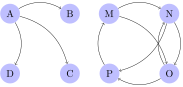

If our claims about hierarchies so far are on the right track, then posets seem to play an important role in language. Not just any posets, though, but rather the ones that constitute at least weakly connected graphs. Among those, some are even more special as they form semilattices or lattices, but as we saw that is not always the case. The next few notebooks give further examples of representations that matter for language and are at least weakly connected graphs. We start with syntactic trees.
So far we have treated sentences as strings, as simple sequences of words. But decades of syntactic research have amassed an enormous body of evidence that this simply isn’t the right way of thinking about sentences. Some words in a sentence are more tightly connected than others, and a string cannot encode this fact.
The sentence John saw the man with the telescope can have two meanings: one where John used a telescope to see the man, and one where the man that John saw had a telescope with him. In the first case with the telescope seems more closely connected to saw, in the second to man.
Each one of the following sentences is ambiguous. Describe the ambiguity, in particular which words seem to be more closely related depending on the reading.
Here’s another piece of evidence that sentences aren’t just a flat string of words that are all on equal footing and all enjoy equal status. English speakers can emphasize parts of a sentence by putting them at the beginning, as in the following paradigm:
But not everything can go in this spot, even if could be worth emphasizing.
So not all words in a sentence are on the same level, some can do things that others cannot. And the same argument also shows that not all substrings of a sentence are alike.
Instead of flat strings, sentences are more like chemical molecules where words are connected by intricate structures. Linguists formalize these structures by trees, such as the one below.
As in all sciences, there isn’t perfect agreement about how to analyze the facts, and so you might also find other tree structures being proposed. Three examples are shown below, some of which are considered obsolete nowadays.
There certainly are many differences between these structures, but the motivation for these differences would be the subject of a syntax class. We are only concerned with the mathematical status of these structures. And in that respect things are simple: despite all their differences, all these structures are trees.
A tree consists of a number of nodes that are ordered vertically. The tree must have a single node at the very top, which is called its root. Each node may have one or more branches that connect it to nodes below it. Crucially, no node can be connected to more than one node above it. That’s what gives the tree-like appearance.
Since trees are a fundamental data structure in linguistics, we will be dealing with them quite a bit at various points. That’s why we need to have a precise terminology to talk about them, and a more abstract understanding for what a tree is (among other things, this is very useful if you ever have to write a program that works with trees rather than strings). The most common view of trees defines them as a special type of graph.
A tree is a graph \(G\) such that
Those are some fancy new terms in there, but all the ideas are simple.
Given a graph \(G \mathrel{\mathop:}=\left \langle V, E \right \rangle\), the in-degree of a vertex \(v\) measures how many edges end in \(E\). Its counterpart is the out-degree, which measures how many edges leave \(v\). Formally, the in-degree of a vertex \(v\) is the cardinality of \(\mathrel{E} v\), and its out-degree is the cardinality of \(v \mathrel{E}\). A vertex with in-degree 0 is a source, and a vertex with out-degree 0 is a sink. The in-degree and out-degree of a graph are the maximum of the in-degrees and out-degrees of its vertices.
Consider the two weakly connected graphs below.

In the left one, the vertices B, C, and D all have an in-degree of 1 and an out-degree 0, making them sinks but not sources. The vertex A has an in-degree of 0 and an out-degree of 3, so it’s a source but not a sink. Overall, the graph has an in-degree of 1 and an out-degree of 3.
Now look at the right graph. The vertices A, B, and C all have an out-degree of 2, whereas 10 has an out-degree of 1. The in-degree of A is 1, whereas B, C and D have in-degrees 2. None of the vertices in this graph are sources or sinks. This graph has an in-degree of 2 and an out-degree of 2.
Draw the smallest graph possible where every vertex has in-degree 2 and out-degree 2. Try to minimize both the number of vertices and the number of edges.
Say whether the following statement is true or false: In every finite graph, the sum of in-degrees of all vertices must equal the sum of the out-degrees of all vertices. Justify your answer.
If the plain English description is unclear to you, here’s one in formal terms. Suppose we write \(i(v)\) and \(o(v)\) for the in-degree and out-degree of vertex \(v\), respectively. Then it holds for every finite graph \(\left \langle V,E \right \rangle\) that summing all elements of \(\left \{ i(v) \mid v \in V \right \}\) yields the same number as summing all elements of \(\left \{ o(v) \mid v \in V \right \}\).
Say whether the following is true or false: no vertex can be both a source and a sink. Justify your answer.
A graph is rooted iff both of the following hold:
We can express this in formal terms using \(E^*\) for the reflexive, transitive closure of the edge relation \(E\): there must be exactly one \(v\) such that \(E^* v = \emptyset\), and it also holds for \(v\) that \(v E^* = V\).
Explain step-by-step why it is the case that if there is exactly one \(v\) such that \(E^* v = \emptyset\) and \(v E^* = V\), then the graph \(G \mathrel{\mathop:}=\left \langle V, E \right \rangle\) is rooted.
Consider once more the graphs from the previous example, repeated here for your convenience:
The left one is rooted, whereas the right one is not.
Draw the smallest graph that is rooted but not a tree. Try to minimize both the number of vertices and the number of edges.
Every rooted graph is weakly connected. Explain why.
Finally, a graph is acyclic iff there is no vertex \(v\) such that \(\left \langle v,v \right \rangle \in E^*\). Keep in mind that \(E^*\) is the reflexive transitive closure of the edge relation, so even if the edge relation itself does not contain \(\left \langle v,v \right \rangle\) the graph may still contain a cycle. Perhaps \(v\) is connected to \(u\), \(u\) to \(w\), and \(w\) to \(v\). That would still be a cycle. Basically, whenever we can start at some vertex \(v\) and follow a sequence of 1 or more edges all the way back to \(v\), the graph contains a cycle and hence cannot be acyclic.
For each one of the two graphs from the previous example, say whether it is acyclic.
Now that you know what all these terms means, go back to the definition of trees and study it carefully. Does it match your intuitive understanding of trees? Or is there something that must be added in order to make it a traditional linguistic tree? Only read on once you’ve made up your mind.
Taking a step back, a tree in the graph-theoretic sense is just a graph with a unique source from which all vertices can be reached, and where no vertex can have more than one incoming edge. The number of outgoing edges, however, is not limited. This makes trees unbalanced. A graph is balanced iff it holds for every vertex that its in-degree is the same as its out-degree.
Trees show up in all kinds of areas and aren’t a peculiarity of linguistics. However, linguistic trees are a more specialized construct than trees in the graph-theoretic sense. Note how the definition above only uses a single edge relation. So nodes can only be ordered along one dimension, which linguists commonly refer to as dominance. But linguistic trees also have linearity.
The two trees below are equivalent from a graph-theoretic perspective as they define exactly the same edge relation over the same vertices.
But the two are not the same. One represents the structure of Thus Mary died, whereas the other is the structure of the (fairly stilted) Thus died Mary.
We could enrich graphs with a second relation for linear order, but then the definition for trees gets much more convoluted. Fortunately, there is a nice alternative that also reveals trees to be a natural generalization of strings. This is shown in the next notebook.